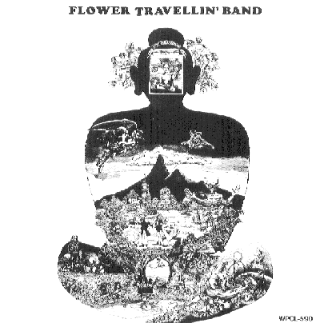
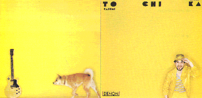
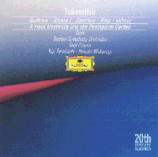
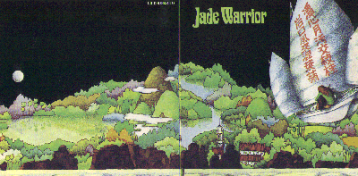
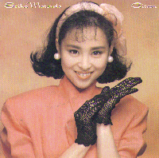
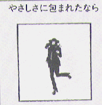
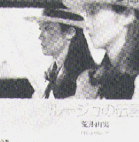

THE
9TH
YE
BA
DONG
MUSIC
FESTIVAL
일시 : 1996년 6월 15일 토요일 오후 2시
장소 : 홍대앞 Freebird
참석자 :
김이영, 신인철, 이훈구, 최창규, 김성우, 장민수, 김남웅, 조영래,
유영재, 최홍석, 전승훈, 지영아, 김영호(and 여자친구분), 신동호,
조승모, 조연경.
YeBaDong 최초로 Sampler CD를 제작했습니다.
- 최 홍 석 hschoi@srtf.sec.samsung.co.kr -
1. Living in the Shiny Days 4:16 - Vermilion Sands (Water Blue‘88)
Yoko Rouyama의 예쁜 보컬이 매력적인 5인조밴드입니다. 특히 Living in the
Shiny Days, Renasisance의 Carpet in the Sun과 분위기, 창법에서 아주 흡사
합니다.
Let's stop working Escaping from yesterdays
And run away from the city We made the new days
Drive to the countryside For the living in the shiny days
Greens are rustling It's glittering like the milkways
Grows around hillisde I gave you a joyful time
And say hello to our eyes And you make me smile
We wade across the river The wind has risen
With winds through out hair The wings into the sky
And fleecy clouds abive our head How I'd like to be that bird
Bee us to a farmer Never return to the city
Who give us a friendly smile Flying over the land
And flying across the sea
Walking, talking and joking together You breathed the country's clear air
We came down on the farm The first sight of dawn appeared
Dancing, rolling but nothing special on me Dew drops are sparkling on the lawn
2. A Mare 4:28
Alkaloid 4:49 - Pageant (The Pay for Dreamer's Sin '89)
예전에 AR지에 이들의 1집이 잠시 소개되었습니다. 이번 앨범은 그들의 3집으로
무엇보다 Hiroko Nagai의 보컬이 특징입니다. 제가 들어본 일본 여성 보컬
중에서는 가장 힘있고 매력이 있더군요. 그리고 보통 여성 보컬들을 얼굴
(?)으로만 내세운 밴드들과는 달리 전곡이 그녀에 의해 작사, 작곡된 것도
이 앨범의 특징입니다.
3. Super Joker 5:42 - Mr.Sirius (Dirge '90)
Pageant의 오리지날 멤버중 하나였던 Kazuhiro "Sirius" Miyatake가 Hiroko
Nagai를 guest로 참가시켜 만든 그의 2집입니다. 이 앨범에서는 20분짜리 대곡인
The Nile for a While이 압권입니다만 Hiroko의 보컬이 돋보이는 Super Joker를
골랐습니다. 앞의 곡에서의 Hiroko의 보컬 분위기와 비교해가면서 들으시면
재미있을 것 같네요.
I've been waiting for my spector Joe One of guess, short distance behind
Tick tak dance with a smile upon your face Wanna live apart beyond all things
Who could guess it and overtake you Stay down, Joe!!
Super Joker I've been dancing with my preacher Joe
Just for rounding out the thousand rings 'Chocolate-mouses'
Zig-zag trace there's a meaning of the dance here it comes at last, tonight
Then your 'cracker' is rushed to the heart When streams turn pink in the settin red
Super Joker
Super Joe!! Just for painting out the thousand dreams
Wasted honey, ride for a fall Glory hole in the whisper of the glades
Goin' on red chariot Then your 'freezer' is lost in the heart
(lap to be do)
Dumping and stamping out the states
For rolling today
4. 出發 ~Dream Trip~ 4:24 - Novela (最後戰爭傳說 ‘83)
80년대초 일본 아트록계를 대표하던 하드/아트락 그룹입니다. 초기에는 상당히
하드한 락을 연주한 편이었는 데, 본 最後戰爭傳說은 다소 symphonic한 면이
나타납니다. 만화왕국인 일본답게 리더인 Terutsugu Hirayama가 만화에서 스토리를
가져와서 하나의 앨범으로 구성하였는데 나름대로 극적인 구성이 돋보입니다.
Teru는 이후에 속편격인 最後戰爭傳說 II도 제작하고, 솔로로 독립하여 Teru's
Symphonia를 조직하여 활동하게 됩니다
그런대로 연주는 들을만하지만, Hisakatsu Igarashi의 보컬은 조금 거슬리는 면이
있습니다.
5. SACRED DREAM I 2:47
POWER OF THE GLORY 4:15 - Kenso (Kenso '85)
6. Brilliant Streams 22:38 - Asturias (Brilliant Streams '90)
Asturias가 발표한 두 장의 앨범 (Circle in the Forest '88)에는 20분짜리 동명의
타이틀곡들이 압권입니다. 시간상 짤라버릴려고 했는데 모씨(?)의 압력으로 소개해
드립니다. 전 연주곡들을 별로 좋아하지 않지만 Asturias의 곡들은 my favorate
입니다. 중간 중간에 나오는 여성목소리는 Zabadak의 Yoko Ueno가 guest로 참가하였습니다.
Section 2. Another Face Of Japanese Prog.
- Koenji Hyakkei - Ioss (from _Koenji Hyakkei_, 1995)
members: Tatsuya Yoshida-drum&vocals, Aki-vocals&keyboards
Ryuichi Masuda-vocal&guitar&g-synth, Shigekazu Kuwahara-vocal&bass
keywords: T. Yoshida from Ruins, Magma, Pseudo-Kobaian
Japanese Traditional Music & even Kyrie. ;
- Happy Family - Partei (from _Happy Family_
1995)
members: Kenichi Morimoto-keyboards, Tatsuya Miyano-bass
Shigeru Makino-guitars, Keiichi Nagase - drums
keywords: Univer
Zero, East-European Traditional Music, Zeuhl Bass, *power
- Bondage Fruit - Octopus-Command (from _Bondage Fruit_
1994)
members: Kido Natsuki-guitar, Katsui Yuji-vocal&violin
Chtsubo Hirohiko-bass, Takar
Kumiko-vibraphone&marimba&glockenspiel&percussion, Okab
Yuichi-percussion, Saga Yuki-vocal, Aki-vocal
keywords: nothin
particula
- After Dinner - Soknya-Doll (from _Editions_, original release(_Glas
Tube_):1983)
members: Haco - singing, keyboards, tapes, etc....
& other members
keywords: fragile, sound collage, studio a
an instrument, Re
- Tipographica - King's Golden Toilet (from _The Man Who Does Not Nod_
1995)
members: Tsuneo Imahori-guitar,Akira Sotoyama-drums
Hiroaki Mizutani-bass, Akira Minakami-keyboards,Naruyoshi Kikuchi-sopran
sax&tenor sax, Osamu Matsumoto-Trombone
keywords: We Can Dance
:-
Neo-Zao's HOME Page

1996년 6월 15일 신촌 fREEBIRD
3번째 순서 : Neo-Zao 김 남 웅
1. Kazumi Watanabe
Sukiyaki - Kyu Sakamoto
Ueo Muite Aruko
Cokumo Island
1963년 미국에서는 기묘한 일이 벌어졌다. 빌보드 챠트에서 일본인에 의해 일본어
로 불려진 노래가 무려 3주동안 탑을 차지하는 기현상이 벌어진 것이다. 사실 이 곡의 원제는 _수키야키_라는 우스꽝스러운 제목
이 아니고 _위를 보고 걷자_라는 것이었다. 당시 큐가 애인에게 실연당한 심정을 가사로 표현한 곡이었다.('눈물이 흐르지 않도
록 위를 보고 걷자'라는 내용임.) 그런데 이 곡을 미국에 소개한 DJ가 어려운 일본말을 어떻게 멘트할지 몰라 그냥 알고 있는 일
본 음식인 수키야키로 소개해 버렸다는 것이라고 한다. 엄밀히 말하자면 이 곡은 일본적인 색깔이 그리 나오지 않는 달콤한 멜로
디의 팝송이라 하겠다.

카주미 와타나베는 일본이라는 지역에만 국한된 기타리스트가 아니다. 그는 아마도 일본에서 가장 세계화된 기타리스트 일 것이
며 (이는 그가 가진 미국 및 유럽 순회공연의 성황 및 세계 각국에 라이선드된 앨범들로 증명된다.) 그가 쏟아내는 음악 또한 높
은 수준을 인정받고 있다. 카주미는 세계적 기타리스트로의 터닝 포인트였던 '80년의 Mobo앨범 이 후 엄청난 세션과 공연에서의
협연, 그리고 꾸준한 앨범발표로 현재 중진의 위치에 올라있다. 프로록 팬들에게 빌 브루포드와 제프 벌린과의 세션으로 알려져
있지만 그 외의 앨범들도 매우 뜨거운 것이다. 최근 그는 앨범을 좀 쉽게 만드는 경향을 보여주는 것이 좁 아쉽다. _위를 보고
걷자_는 강렬함의 이면인 반주 스타일의 연주와 어우러진 아름다운 곡으로 원곡의 품위를 해치지 않고 있다. _Cokumo Island_는
80년대의 앨범인 To Chi Ka에 실린 곡으로 랜디 브레커와 토니 레빈, 워렌 배른하르트 (dmp레이블의 선두주자 중 한 명)과의 협연곡이다.
2. Toru Takemitsu (1930-1996)
Masai Morning 전반부 - Jade Warrior
Sacrifice
Moby Dick
Here, there & Everywhere

현재 일본은 상당수의 현대음악 작곡가가 활동하고 있는 현대음악분야의 잠재적 강국 중 하나라 할 수 있다. 그러나 실상 세계
에 알려진 작곡가는 타케미츠가 거의 유일한 존재이다. 독학으로 작곡가의 길에 들어선 이 자그만 체구의 일본인은 존경받는 음
악가로 또한 일본적 음색을 현대적인 기법으로 구체화 시킨 인물로 평가되고 있다. 그의 예술 전반에 관한 관심은 실로 지대하여
오시마 나기사나 쿠로사와 아키라 등의 작품을 포함한 백여편에 달하는 영화음악 작곡, 미술인들과의 교류, 오자와 세이지와의
극장 건축 관계 등으로 뻗어 있다. 그의 초기 작풍은 일본적 음색을 의도적으로 회
피한 것들로서 music concrete으로 분류될 만한 것이었다.
그가 세계적 주목을 받게 된 계기는 '57년에 작곡된 Requiem 때문이다.

이 작품은 스트라빈스키에 의해 매스터 피스라는 칭송을 얻어내었다. 그의 전성기에서 현대에 이르는 작품들은 실로 일본색이
짙은 것으로 음색은 드뷔시와 메시앙의 것을, 기법상으로는 신빈악파의 것을 차용하고 있다. 그의 음악적 특성을 서양의 비평가
들은 'elegant silence'로 축약하고 있는데 이는 매우 적절한 표현이다. 일본의 민족음악의 특징 중 하나는 '양식화된 세련미'로
서 지나친 화려함을 피하고 감정의 표현을 억제하여 얻는 우아함을 말한다. 이를 노(能)음악에서는 이키(苔)라고 하는데 타케미
츠의 음악에서는 바로 이 것이 그래로 느껴진다. 이러한 느낌은 청자로 하여금 현대음악이라는 틀에서 벗어난 경건함과 편안함,
그리고 이국적 정취를 부여하는데 간단히 말하자면 일본적인 드뷔시, 일본적인 메시앙이라고 하겠다.
_Sacrifice_는 '62년에 작곡된 작품으로 _Ring_, _Valeria_과 함께 이루어진 삼부작의 한 곡이다.이 작품의 주된 느낌은 역시
동양(일본)의 명상적인 것인데 악보에 적힌 타케미츠 자신의 설명과도 일치하는 면이다. "... 이 작품은 어떤 특정한 종교
적인 주목을 위해 씌어진 것이 아니다. 그러나 ... 나의 이미지의 세계에서 이 것은 신에게 봉헌된 것이다. 나는 이 악장을 chan
t라 불러왔다. 왜냐하면 이런 형태의 음악은 기도에 의해 더욱 심화된다고 믿었기 때문이다. ... 나는 경건과 깊은 침묵을 표현
하고자 한 것이다. ..."
곡의 전반부의 소개되는 Jade Warrior 역시 서양의 관점에서 동양의 신비로움을 표현하는 밴드이다. 그들의 방법이 일본태생의
작곡가와 일맥상통하는 점이 있다는 사실은 매우 흥미롭다. 특히나_Masai Morning_의 전반부는 샤쿠하치의 음색을 모사하는 플륫
의 쓰임에서 _Sacrifice_와 흡사한 면이 있어 같이 배치했다.
_Moby Dick_은 기타와 앨토 플륫을 위해 씌어진 _Toward The Sea_의 두 번째 파트이다. 이 3악장의 곡은 3-note의 동기가 전체
곡을 이루는데 그 것은 Eb, E, 그리고 A이다. 독일식의 표기로는 Eb은 Es라고 한다. 따라서 이러한 동기는 "SEA"라는
기호학적인 의미를 갖게 된다. 역시 duration을 중시하는 바쁘지 않은 아름다운 음색을 들을 수 있다.
_Here, there & Everywhere_는 타케미츠의 light music의 관심을 증명하는 기타를 위해 편곡된 곡이다.
3. Akiko Yano
Someday
Oh, oh Pari
아키코 야노는 국제화된 일본을 상징하는 여성인 동시에 일본의 고유성을 상징하는 월드뮤직 아티스트로도 소개되는 양면성을
가진 존재이다. 그녀가 오늘날 일본 및 세계적으로 인정을 받고 있는 이유는 그녀가 써내는 노래들이 한 시대나 특정지역의 감수
성에만 호소하는 따위의 것들이 아니기 때문이다. 그녀는 일본의 모 잡지에 의하면 야마시타 테츠로도 인정하는 매우 훌륭한 sin
ger songwriter이다. 일본의 키보드를 다루는 잡지들에서는 그녀의 공연 및 스튜디오 작업, 앨범발표 등 일거수 일투족을 주요기
사로 싣고 있는데 이는 아마도 그녀의 편곡의 청아함, 그리고 일본인의 감각으로서는 표현하기 힘든 서구적인 음제작 능력에서
비롯되는 것으로 생각된다.
4. Seiko Matsuda
Ringoju No Hibi

'80년의 4월 1일 앳된 소녀가 일본의 가요계를 떠들석하게 하며 등장했다. 그녀는 기존의 아이돌 스타와는 차별화된 가창실력으
로 "아이돌은 노래를 잘 하지 못한다"라는 고정관념을 뒤바꿔 놓았다. 그녀가 '96년 현재까지 이루어 놓은 업적은 시
대를 앞서간 끊임없는 '변신'으로부터 비롯된다. 가창력 있는 아이돌이라는 신선한 충격적 데뷰 이 후 그녀는 대략 5년 정도를
정상의 아이돌 위치를 고수했다. 그 후 결혼과 함께 은퇴(대표적으로 야마구찌 모모에)라는 아이돌 스타의 공식을 깨고 음악활동
을 고수했다. 또한 결혼 후에도 과감하게 미국으로 건너가 유창한 영어를 구사하게 되었다. 자신이 추구해온 일본적 팝스의 생명
이 끝날 무렵 미국에 데뷰하여 어느 정도의 성공을 거두고, 일본 내에서의 곡들도 그 취향을 완전히 바꾸어 버렸다. 결혼 후 자
신의 공연 스타일을 단순히 귀엽게 뛰어다닌 것에서 화려한 댄스가 겻들여진 볼 만한 것으로 바꾸었다. 노래만 하는 소녀가수에
서 현재 자신의 곡의 반 정도를 작곡하는 아티스트로 성장했다. 어찌 보면 평범한 듯한 변화이지만 이러한 것들은 일본내에서는
매우 드물고, 놀라운 것이었다. 끊임 없는 스캔들과 비난에도 불구하고 그녀는 현재에도 매우 상품성있는 가수로서 활동하고 있
다. _술의 나날_은 '86년 일본에서는 매우 흔한 돈을 주고 외국의 실력있는 뮤지션이나 프로듀서를 사오는 방법으로 데이빗 포스
터를 영입하여 만들어 낸 앨범이다. 이 앨범은 그녀가 일본인들과 만들지 않은 몇 장의 앨범중에서도 가장 높은 완성도를 가지고
있고 따라서 그 색깔도 여타의 앨범과는 사뭇 다르다. 데이빗 포스터의 극적인 오케스트레이션이 겻들여진 훌륭한 작품이라고
생각한다.
5. Hiroko Taniyama
Mizutama Jikan
Desert Moon
 히로코의 데뷰는 '72년 경이다. 당시 16살의 싱어 송 라이터는 아직까지도 그 아름다운 목소리를 그대로 간직한 채 활동하고 있
다. 그녀의 목소리의 깨끗함은 Maggie Reily나 Annie Haslam과도 비견될 만한 것이다. 그녀는 80년대에 접어들어 공연 요청이 있
는 곳이면 어느 곳이나 피아노와 함께 찾아가는 매우 왕성한 활동을 펼쳤고, FM방송의 디제이로서 여성취향의 소설들을 다수 발
표한 매우 재능있는 singer songwriter이다.
히로코의 데뷰는 '72년 경이다. 당시 16살의 싱어 송 라이터는 아직까지도 그 아름다운 목소리를 그대로 간직한 채 활동하고 있
다. 그녀의 목소리의 깨끗함은 Maggie Reily나 Annie Haslam과도 비견될 만한 것이다. 그녀는 80년대에 접어들어 공연 요청이 있
는 곳이면 어느 곳이나 피아노와 함께 찾아가는 매우 왕성한 활동을 펼쳤고, FM방송의 디제이로서 여성취향의 소설들을 다수 발
표한 매우 재능있는 singer songwriter이다.
6. Iruka
Silhouette
Hyu No Wasure Mono
이루카는 일본인들의 동화적 취향 소위 메르헨의 정취를 잘 표현한 포크계의 아티스트로서 '75년경에 데뷰했다. 그녀의 소녀적
인 감성은 목소리나 곡에서보다는 가사로 표현된다. 이 두곡은 '76년의 라이브 앨범의 것으로서 깔끔한 편곡의 현악 파트나 어쿠
스틱 기타의 정제됨이 향수를 자아낸다.
7. Yumi Arai
Yasasisani Tsutsumaretanara
Rouge No Dengon

미야자키 하야오의 5번째(카제노 타니노 나우시카 - 텐코노 시로 라퓨타 - 토나리
노 토토로 - 판다코 판다 -) 극장용 애니메이션인 마죠노 타큐빙에는 두 곡의 매우 신나고 아름다운 곡이 흐른다. 첫 곡은 주인
공인 키키가 처음으로 빗자루를 타고 마녀수업을 가는 도중에 잘난 척하는 동료를 떠나보내고 난 후 빗자루에 걸린 구식 트랜지
스터 레디오에서 흘러나오는 _루즈가 알리는 말_이고, 두 번째 곡은 키키에 의해 남자친구가 죽음의 고비로부터 구해지고(이 순
간은 긴장의 침묵이 흐른채 극이 진행됨) 매우 흐뭇한 엔딩으로 나오는 _야사시사니.._이다.

이 곡의 원작자이며 '72년 말에 일
본을 뉴 뮤직의 열풍으로 빠져들게 한 여가수가 아라이 유미이다. 그녀는 결혼이 후 성을 바꾸어 마츠토야 유미로 활동하고 있는
데 현재까지도 내 놓는 앨범마다 더블 플래티넘을 상회하는 기록을 세우고 있는 가수이다. '94년경 한국의 모 잡지에서는 오자키
유타카와 함께 유미를 일본의 젊은이들로부터 진정한 숭앙을 받고 있는 인물로 평을 한 적이 있는데 그녀의 지지층은 일본의 모
든 사람을 커버한다고 해도 과언이 아니다. 매우 유려한 멜로디, 어릴 적의 부유함으로부터 비롯된 밝은 가사와 곡조 끊임없는
창작활동으로 그녀는 매우 높게 평가받아야 할 것이다. 그녀가 아라이 유미 시절 만들었던 작품들은 어느 것이나 포크와 팝스의
수작이라고 생각한다.
 Back to Previous Menu
Back to Previous Menu